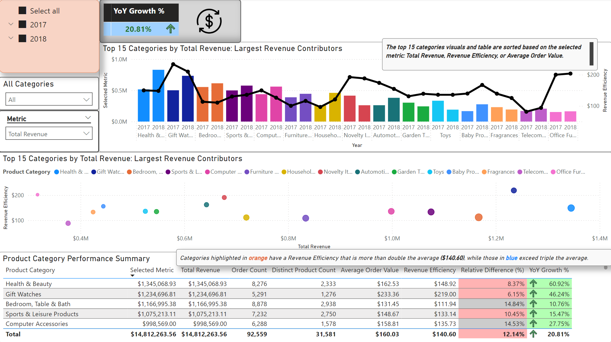
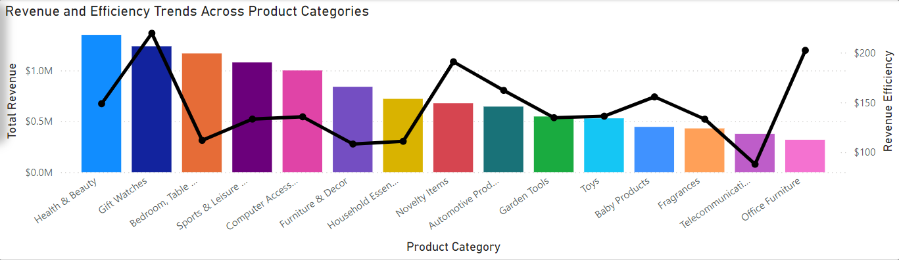
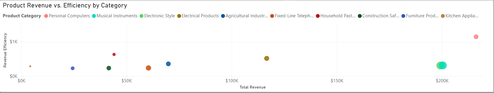
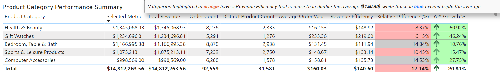

Dashboard 1: Revenue Efficiency Analysis by Product Category

Purpose
This dashboard provides a detailed analysis of revenue efficiency across
product categories, focusing on trends, profitability proxies, and actionable
insights to enhance performance.
Key Insights
-
Health & Beauty is the top-earning category with a revenue of $1.3 million,
but Personal Computers is the most efficient category with a Revenue
Efficiency (RE) value of $1,144.05. Three categories exceed triple the
average RE: Household Pastels, Oven & Café ($640.25), and Electrical
Products ($514.01).
-
Categories with smaller product lines and seller counts, like Personal
Computers (30 products, 9 sellers), demonstrate high RE. Prioritizing these
categories could lead to quicker revenue increases.
-
Gift Watches and Office Furniture, among the top 15 revenue categories, have
standout RE values ($219.42 and $202.30, respectively). Office Furniture, in
particular, has growth potential due to its relatively small product line
(301 products).
Dashboard Features and Sections
Filters and Selections
-
Time Slicer: Allows users to filter the data by specific
time periods, similar to the EDA dashboards.
-
Category Slicer: Filters for the top 15 categories,
excluding outliers like Personal Computers, which had disproportionately
high RE values.
Screenshots
Visualizations
Revenue and Efficiency Trends Across Product Categories
A bar and line chart comparing total revenue (bar) and revenue efficiency
(line) for the top 15 categories by revenue. Colors for each category match
those used in the scatter chart, ensuring consistency.
Screenshots

Revenue Efficiency Trends Chart
Product Revenue vs. Efficiency by Category
A scatter chart displaying the relationship between total revenue (x-axis), RE
(y-axis), and product count (bubble size). Highlights the top 10 categories by
RE.
Screenshots

Product Revenue vs. Efficiency Chart
Product Category Performance Summary
A table listing product category, total revenue, order count, product count,
distinct product count, average order value, and RE. Features conditional
formatting for categories exceeding double or triple the average RE.
Screenshots

Product Category Performance Summary Table
Insights in Action
These insights suggest strategies for boosting revenue efficiency and overall
sales:
-
Focus on expanding offerings in high-efficiency categories like Personal
Computers and Office Furniture.
-
Implement bundling strategies or diversify product lines for smaller
categories to increase multi-item orders.
-
Optimize marketing efforts for categories with high RE values to achieve
quicker revenue gains.
Measures Used
This section provides an overview of the key measures used in this dashboard.
For a look at all measures used across my analysis, refer to the
DAX Measures Document. Otherwise, use the links
below to navigate to the respective measure.